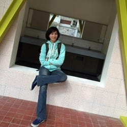
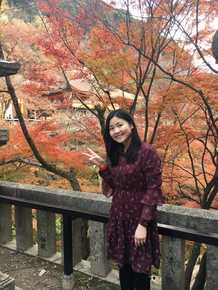

Group MembersThis page preserves the member profiles published on the previous laboratory website. Please contact the lab for the latest roster.
Current Members
Research Associate/Assistant

伍倢瑩 (Jenny Wu)
專任研究專員。臺灣大學公共衛生學系、流行病學與預防醫學研究所畢業。研究興趣為傳染病流行病學，研究所畢業論文為身體質量指數與結核病的關係。平常喜歡運動和打球。
She is a research associate. Her major is Public Health. She completed her master degree in Institute of Epidemiology and Preventive Medicine, NTU. Her research interest is Tuberculosis Epidemiology. She likes to exercise.
專任研究專員。臺灣大學公共衛生學系、流行病學與預防醫學研究所畢業。研究興趣為傳染病流行病學，研究所畢業論文為身體質量指數與結核病的關係。平常喜歡運動和打球。
She is a research associate. Her major is Public Health. She completed her master degree in Institute of Epidemiology and Preventive Medicine, NTU. Her research interest is Tuberculosis Epidemiology. She likes to exercise.

楊芷其 (Chih-Chi Yang)
專任研究助理。畢業於臺大流行病學與預防醫學研究所、臺大公衛系，大學時因修習傳染病學學程而對結核病產生興趣，平時喜歡旅遊、看日劇及打網球。
She graduated from the Institute of Epidemiology and Preventive Medicine and the Department of Public Health, NTU. She has completed the Infectious Diseases Program during her college time and taking an interest in tuberculosis. Her hobbies are traveling, watching Japanese drama, and playing tennis.
專任研究助理。畢業於臺大流行病學與預防醫學研究所、臺大公衛系，大學時因修習傳染病學學程而對結核病產生興趣，平時喜歡旅遊、看日劇及打網球。
She graduated from the Institute of Epidemiology and Preventive Medicine and the Department of Public Health, NTU. She has completed the Infectious Diseases Program during her college time and taking an interest in tuberculosis. Her hobbies are traveling, watching Japanese drama, and playing tennis.
Doctoral Student

沈秉杰 (Bing-Jie Shen)
研究興趣：流行病學電腦模擬
課外興趣：中國象棋、人工智慧
研究興趣：流行病學電腦模擬
課外興趣：中國象棋、人工智慧
Master Student
胡亭宇 (Ting-Yu Hu)
She is a pulmonologist & intensivist in the Division of Pulmonary Medicine, Department of Internal Medicine at Wan Fang Hospital-Taipei Medical University. She was graduated from School of Medicine, Taipei Medical University. Currently she is a Master student in the Institute of Epidemiology and Preventive Medicine, National Taiwan University. She is interested in biostatistics and study design of epidemiology. Furthermore, her research interest are involving in meta-analysis and risk factors of tuberculous epidemiology. Her hobbies are travelling, snorkeling and having fun with children.
She is a pulmonologist & intensivist in the Division of Pulmonary Medicine, Department of Internal Medicine at Wan Fang Hospital-Taipei Medical University. She was graduated from School of Medicine, Taipei Medical University. Currently she is a Master student in the Institute of Epidemiology and Preventive Medicine, National Taiwan University. She is interested in biostatistics and study design of epidemiology. Furthermore, her research interest are involving in meta-analysis and risk factors of tuberculous epidemiology. Her hobbies are travelling, snorkeling and having fun with children.

顏佳瑩 (Chia-Ying Yen)
疾管署北區管制中心護理師，畢業於陽明大學護理系，就讀MPH，曾是兒科護理師，對於傳染病尤其是腸病毒感染及數理建模有興趣，平時喜歡看電影、日劇和優質台劇。
Professional Nurse in Northern Regional Center of Taiwan CDC. She graduated from Department of Nursing, NYMU. She used to be a pediatric nurse. This is her third year of MPH degree in NTU. She has interests in infectious diseases, especially in Enterovirus infections and mathematical modeling of infectious diseases. She likes to watch movies, Japanese drama and some Taiwanese drama.
疾管署北區管制中心護理師，畢業於陽明大學護理系，就讀MPH，曾是兒科護理師，對於傳染病尤其是腸病毒感染及數理建模有興趣，平時喜歡看電影、日劇和優質台劇。
Professional Nurse in Northern Regional Center of Taiwan CDC. She graduated from Department of Nursing, NYMU. She used to be a pediatric nurse. This is her third year of MPH degree in NTU. She has interests in infectious diseases, especially in Enterovirus infections and mathematical modeling of infectious diseases. She likes to watch movies, Japanese drama and some Taiwanese drama.

黃佳琪 (Chia-Chi Huang)
現就讀於臺大公共衛生碩士學位學程(MPH)，畢業於國立陽明大學物理治療暨輔助科技學系學士班，從事復健醫療多年，研究與復健相關之成本效益分析，熱愛羽球。
She is now a student of Master of Public Health Program in NTU. She graduated from National Yang-Ming University of Physical Therapy and studied in cost-effectiveness of rehabilitation. She enjoys playing sports, especially badminton.
現就讀於臺大公共衛生碩士學位學程(MPH)，畢業於國立陽明大學物理治療暨輔助科技學系學士班，從事復健醫療多年，研究與復健相關之成本效益分析，熱愛羽球。
She is now a student of Master of Public Health Program in NTU. She graduated from National Yang-Ming University of Physical Therapy and studied in cost-effectiveness of rehabilitation. She enjoys playing sports, especially badminton.

施承妤 (Cheng-Yu Shih)
目前就讀於臺大流行病學與預防醫學研究所，畢業於長庚大學醫務管理學系，曾在台大臨床藥學研究所擔任專任研究助理，對於使用統計軟體進行資料處理和統計分析很有興趣，平時愛好健身、美食、習字和流行音樂。
She is currently studying at Institute of Epidemiology and Preventive Medicine in NTU and graduated from Department of Health Care Management in Chang Gung University. She used to be a research assistant at Graduate Institute of Clinical Pharmacy in NTU. She is interested in data analysis by using statistical softwares. Workout, food, handwriting and pop music are what she is fond of in her free time.
目前就讀於臺大流行病學與預防醫學研究所，畢業於長庚大學醫務管理學系，曾在台大臨床藥學研究所擔任專任研究助理，對於使用統計軟體進行資料處理和統計分析很有興趣，平時愛好健身、美食、習字和流行音樂。
She is currently studying at Institute of Epidemiology and Preventive Medicine in NTU and graduated from Department of Health Care Management in Chang Gung University. She used to be a research assistant at Graduate Institute of Clinical Pharmacy in NTU. She is interested in data analysis by using statistical softwares. Workout, food, handwriting and pop music are what she is fond of in her free time.

呂方雯 (Fang-Wen Nora Lu)
目前就讀臺大流行病學與預防醫學研究所，畢業於臺灣大學心理學系並修習生物統計學程，也曾在臺灣疾病負擔中心擔任專任研究助理。對心理疾病、傳染病、各類方法學與模型感興趣。喜歡大自然和寫作。
She is currently a graduate student at the Institute of Epidemiology and Preventive Medicine. She received her Bachelor of Science degree from the Department of Psychology at NTU, and also completed NTU's Biological Statistics certificate program. Before beginning her master's degree, she worked as a research assistant at the Taiwan Burden of Disease Center. Her research interests include mental disorders, infectious diseases and statistical methods. She loves writing and astronomy.
目前就讀臺大流行病學與預防醫學研究所，畢業於臺灣大學心理學系並修習生物統計學程，也曾在臺灣疾病負擔中心擔任專任研究助理。對心理疾病、傳染病、各類方法學與模型感興趣。喜歡大自然和寫作。
She is currently a graduate student at the Institute of Epidemiology and Preventive Medicine. She received her Bachelor of Science degree from the Department of Psychology at NTU, and also completed NTU's Biological Statistics certificate program. Before beginning her master's degree, she worked as a research assistant at the Taiwan Burden of Disease Center. Her research interests include mental disorders, infectious diseases and statistical methods. She loves writing and astronomy.

林子祐 (Tzu-You Lin)
目前就讀於臺大流行病學與預防醫學研究所，畢業於台北市立大學衛生福利系，對於統計方法在傳染病的應用很有興趣。平時興趣是運動、唱歌及看電影。
He is currently studying at Institute of Epidemiology and Preventive Medicine in NTU and graduated from Department of Health and Welfare of UT. He is interested in the application of statistical methods in infectious diseases. Exercising, singing and watching movies is his hobby.
目前就讀於臺大流行病學與預防醫學研究所，畢業於台北市立大學衛生福利系，對於統計方法在傳染病的應用很有興趣。平時興趣是運動、唱歌及看電影。
He is currently studying at Institute of Epidemiology and Preventive Medicine in NTU and graduated from Department of Health and Welfare of UT. He is interested in the application of statistical methods in infectious diseases. Exercising, singing and watching movies is his hobby.

藍之辰 (Chih-Chan Jessica Lan)
嗨! 我是之辰，大學時就讀台北醫學大學公衛系，畢業後曾擔任一年研究助理，現在是流預所流行病學組一年級，研究興趣是傳染病流行病學和防疫行為。我常去健身和練瑜珈，有時候會去爬山和慢跑，也喜歡看劇，最近的新興趣是練習長板。
Hi, I'm Chih-Chan :) I graduated from Taipei Medical University, majoring in Public Health, and decided to continue my studies for a master's degree in epidemiology after that. Now, I'm a first-year master's student at the Institute of Epidemiology and Preventive Medicine at National Taiwan University. My research interests include infectious diseases epidemiology and preventive behaviors. In my leisure time, I will hit the gym or practice yoga. Watching sitcoms is also my favorite. Recently, I'm learning to do longboard dancing. I enjoy exploring new things and trying new experiences.
嗨! 我是之辰，大學時就讀台北醫學大學公衛系，畢業後曾擔任一年研究助理，現在是流預所流行病學組一年級，研究興趣是傳染病流行病學和防疫行為。我常去健身和練瑜珈，有時候會去爬山和慢跑，也喜歡看劇，最近的新興趣是練習長板。
Hi, I'm Chih-Chan :) I graduated from Taipei Medical University, majoring in Public Health, and decided to continue my studies for a master's degree in epidemiology after that. Now, I'm a first-year master's student at the Institute of Epidemiology and Preventive Medicine at National Taiwan University. My research interests include infectious diseases epidemiology and preventive behaviors. In my leisure time, I will hit the gym or practice yoga. Watching sitcoms is also my favorite. Recently, I'm learning to do longboard dancing. I enjoy exploring new things and trying new experiences.
Former members

劉柏辰 (Ed Liu)
He graduated from the Institute of Epidemiology and Preventive Medicine of NTU. Previously, he was working on his thesis of spatiotemporal analysis of non-tuberculous mycobacteria. Research interests for him not only about spatiotemporal analysis but also data visualization. In his leisure time, he gives his passion for classical saxophone.
He graduated from the Institute of Epidemiology and Preventive Medicine of NTU. Previously, he was working on his thesis of spatiotemporal analysis of non-tuberculous mycobacteria. Research interests for him not only about spatiotemporal analysis but also data visualization. In his leisure time, he gives his passion for classical saxophone.

沈怡伶 (Yi-ling Shen)
畢業於台北醫學大學醫學系、臺大流行病學與預防醫學研究所，現職為台北市立聯合醫院陽明院區的家庭醫學科醫師，研究主題為身體質量數跟傳染病的相關性，希望能藉由唸研究所培養自己獨立思考跟作研究的能力。興趣為吸貓、運動、跳街舞跟聽西洋音樂。
I graduated from Taipei Medical University and work as a family medicine doctor in Taipei City Hospital, Yang-Ming Branch. My Master research topic is the association between body mass index and community-acquired infections. By joining Professor Lin’s lab and studying Graduate Institute of Epidemiology and preventive Medicine, National Taiwan University, my ultimate hope is that I can cultivate the ability of independent thinking and research. My favorite interests are playing with my cat, exercise and street dancing, which can relieve my tension from work and study.
畢業於台北醫學大學醫學系、臺大流行病學與預防醫學研究所，現職為台北市立聯合醫院陽明院區的家庭醫學科醫師，研究主題為身體質量數跟傳染病的相關性，希望能藉由唸研究所培養自己獨立思考跟作研究的能力。興趣為吸貓、運動、跳街舞跟聽西洋音樂。
I graduated from Taipei Medical University and work as a family medicine doctor in Taipei City Hospital, Yang-Ming Branch. My Master research topic is the association between body mass index and community-acquired infections. By joining Professor Lin’s lab and studying Graduate Institute of Epidemiology and preventive Medicine, National Taiwan University, my ultimate hope is that I can cultivate the ability of independent thinking and research. My favorite interests are playing with my cat, exercise and street dancing, which can relieve my tension from work and study.
羅偉成 (Nicholas Lo)
前博士後研究員。流預所博士班畢業，研究興趣是疾病負擔評估(Burden of Disease Assessment)與系統性文獻回顧統合分析(Systematic Review and Meta-analysis)，喜歡看電影和打桌遊。
He was a postdoctoral researcher and graduated from the institute of epidemiology and preventive medicine, NTU. His research interests focus on Burden of Disease Assessment and Systematic Review and Meta-analysis. He likes watching movie and playing board game.
前博士後研究員。流預所博士班畢業，研究興趣是疾病負擔評估(Burden of Disease Assessment)與系統性文獻回顧統合分析(Systematic Review and Meta-analysis)，喜歡看電影和打桌遊。
He was a postdoctoral researcher and graduated from the institute of epidemiology and preventive medicine, NTU. His research interests focus on Burden of Disease Assessment and Systematic Review and Meta-analysis. He likes watching movie and playing board game.

楊博傑
前博士後研究員。畢業於紐約州立大學水牛城分校經濟所。研究興趣為健康經濟學及經濟發展，平時喜歡健身及慢跑。
He was a postdoctoral researcher and graduated from the Department of Economics in State University of New York at Buffalo. His research interests are health economics and economic development. He likes fitness and jogging.
前博士後研究員。畢業於紐約州立大學水牛城分校經濟所。研究興趣為健康經濟學及經濟發展，平時喜歡健身及慢跑。
He was a postdoctoral researcher and graduated from the Department of Economics in State University of New York at Buffalo. His research interests are health economics and economic development. He likes fitness and jogging.
劉澄杰 (Jerry Liu)
前專任研究助理。畢業於臺大流行病學與預防醫學研究所、中山醫公衛系和營養系，是一位新科營養師。大學時期的專題是登革熱疾病負擔研究,對結核病與營養免疫領域有興趣,喜歡閱讀小說、看電影。
He graduated from the Institute of Epidemiology and Preventive Medicine, NTU, and double majored in Public Health and Nutrition in CSMU. He is a dietitian as well. He used to participate a research project related to economic and disease burden of dengue. With intense fascination with the mechanism and association between Nutritional immunity and Tuberculosis, he prone to conduct the research in this field. His hobby is reading novel and watching movies in his leisure time.
前專任研究助理。畢業於臺大流行病學與預防醫學研究所、中山醫公衛系和營養系，是一位新科營養師。大學時期的專題是登革熱疾病負擔研究,對結核病與營養免疫領域有興趣,喜歡閱讀小說、看電影。
He graduated from the Institute of Epidemiology and Preventive Medicine, NTU, and double majored in Public Health and Nutrition in CSMU. He is a dietitian as well. He used to participate a research project related to economic and disease burden of dengue. With intense fascination with the mechanism and association between Nutritional immunity and Tuberculosis, he prone to conduct the research in this field. His hobby is reading novel and watching movies in his leisure time.

曾皓楷 (Kai Tseng)
前專任研究專員。臺灣大學公共衛生學系畢業。進行結核病家戶經濟負擔調查相關研究。
He was a research associate. He graduated from the Department of Public Health, NTU. He is now doing the research about the survey of economic burden faced by the tuberculosis-affected households.
前專任研究專員。臺灣大學公共衛生學系畢業。進行結核病家戶經濟負擔調查相關研究。
He was a research associate. He graduated from the Department of Public Health, NTU. He is now doing the research about the survey of economic burden faced by the tuberculosis-affected households.
廖佑荏 (Yotie Liao)
畢業於中國醫公衛系、臺大流預所。大學期間接觸到傳染病課程萌生興趣，尤其在愛滋病與肺結核方面，因此想要在這方面做努力，平時愛好唱歌、游泳。
He graduated from Department of CMU and Institute of Epidemiology and Preventive Medicine of NTU. He used to participate some classes about infectious diseases and has interests in TB and HIV, so maybe will put effort into these field. He likes to sing and swim in his free time.
畢業於中國醫公衛系、臺大流預所。大學期間接觸到傳染病課程萌生興趣，尤其在愛滋病與肺結核方面，因此想要在這方面做努力，平時愛好唱歌、游泳。
He graduated from Department of CMU and Institute of Epidemiology and Preventive Medicine of NTU. He used to participate some classes about infectious diseases and has interests in TB and HIV, so maybe will put effort into these field. He likes to sing and swim in his free time.

曹宇翔(Ian Tsao)
臺大流預所、高醫公衛系畢業。對於傳染病以及健保資料庫的分析有興趣。平時休閒活動喜歡打排球。
He graduated from the Department of Public Health of KMU and Institute of Epidemiology of Preventive Medicine of NTU. He is interested in the infectious diseases and analysis of Taiwan health insurance database. He likes to play volleyball in the leisure time.
臺大流預所、高醫公衛系畢業。對於傳染病以及健保資料庫的分析有興趣。平時休閒活動喜歡打排球。
He graduated from the Department of Public Health of KMU and Institute of Epidemiology of Preventive Medicine of NTU. He is interested in the infectious diseases and analysis of Taiwan health insurance database. He likes to play volleyball in the leisure time.
陳鳳君 (Fengchun Chen)
畢業於中國醫公衛系及台大流預所，大學期間曾選修傳染病建模的課程以及對使用統計軟體分析資料有興趣，以後可能向此方面進行研究，平時興趣是小旅行、看電影。
She graduated from CMU and Institute of Epidemiology and Preventive Medicine, NTU. She used to participate a lesson about mathematical modeling of infectious diseases and have interests in using Statistical softwares to analysis data, so maybe will do researches about these field. Her hobby is taking a trip or watching movies in her free time.
畢業於中國醫公衛系及台大流預所，大學期間曾選修傳染病建模的課程以及對使用統計軟體分析資料有興趣，以後可能向此方面進行研究，平時興趣是小旅行、看電影。
She graduated from CMU and Institute of Epidemiology and Preventive Medicine, NTU. She used to participate a lesson about mathematical modeling of infectious diseases and have interests in using Statistical softwares to analysis data, so maybe will do researches about these field. Her hobby is taking a trip or watching movies in her free time.
柯尊皓 (Bryant Ko)
從臺大公衛系及流預所畢業，大學時曾經旁聽疾病負擔研究，對結核病與糖尿病的共病關係有興趣，平時的休閒活動有打籃球、攝影。
He graduated from College of Public Health, NTU and completed Master degree in Institute of Epidemiology and Preventive Medicine, NTU. He participated the research of disease burden in college. He is interested at the relationship between diabetes mellitus and tuberculosis. Playing basketball and photography is his hobby.
從臺大公衛系及流預所畢業，大學時曾經旁聽疾病負擔研究，對結核病與糖尿病的共病關係有興趣，平時的休閒活動有打籃球、攝影。
He graduated from College of Public Health, NTU and completed Master degree in Institute of Epidemiology and Preventive Medicine, NTU. He participated the research of disease burden in college. He is interested at the relationship between diabetes mellitus and tuberculosis. Playing basketball and photography is his hobby.

盧靖宜 (Tiffany Lu)
畢業於台師大衛教系與台大流預所，大學時有修習空間資訊學程，因此對於空間分析(GIS)很有興趣，平時的興趣是運動和看美國影集。
She graduated from NTNU and Institute of Epidemiology and Preventive Medicine of NTU. She also took the curriculum of The Program of Geospatial Information Science at NTNU. Therefore, she developed interest of GIS. Her hobby is exercise and watching American television series.
畢業於台師大衛教系與台大流預所，大學時有修習空間資訊學程，因此對於空間分析(GIS)很有興趣，平時的興趣是運動和看美國影集。
She graduated from NTNU and Institute of Epidemiology and Preventive Medicine of NTU. She also took the curriculum of The Program of Geospatial Information Science at NTNU. Therefore, she developed interest of GIS. Her hobby is exercise and watching American television series.

黃佳馨 (Luna Huang)
畢業於輔英科技大學助產系，從事護理工作多年，畢業於台大MPH。因為「無國界醫師」對國際衛生有興趣，平時休閒活動喜歡看電影、逛街、睡覺發呆。
畢業於輔英科技大學助產系，從事護理工作多年，畢業於台大MPH。因為「無國界醫師」對國際衛生有興趣，平時休閒活動喜歡看電影、逛街、睡覺發呆。
施昀汝 (Yun Ju, Shih)
畢業於台大公衛系與流行病學與預防醫學所。對於傳染病模型有興趣。平時喜歡烹飪，旅遊。
She graduated from Nation Taiwan University, college of public health, majoring in biostatistics and epidemiology. Her research interest is on modeling of infectious disease and she is currently working on prediction model of TB for her thesis. She also likes cooking, traveling and exploring nature.

王稚慧 (Chih-Hui Wang)
She graduated from NTU, and her major is epidemiology. Her research interest is in TB dynamic modelling, and she also participated in a national disease burden project. She likes to watch TV series and play badminton in her leisure time.
She graduated from NTU, and her major is epidemiology. Her research interest is in TB dynamic modelling, and she also participated in a national disease burden project. She likes to watch TV series and play badminton in her leisure time.

Jessica Tsay
Jessica is from the US Pacific Northwest. She is pursuing a Master of Public Health in the epidemiology track at National Taiwan University. She is currently studying multidrug-resistant tuberculosis in Taiwan. She likes watching stand-up comedy, hiking, running, baking, traveling, reading, and eating.
Jessica is from the US Pacific Northwest. She is pursuing a Master of Public Health in the epidemiology track at National Taiwan University. She is currently studying multidrug-resistant tuberculosis in Taiwan. She likes watching stand-up comedy, hiking, running, baking, traveling, reading, and eating.
|
吳昀麇 (Lulu)
研究興趣：預測模型、meta-analysis 課外興趣：學煮菜、到處去玩 |
賴亭君 (Lai Ting-chun)
研究興趣：Air pollution and TB 課外興趣：騎單車、看電影、旅行 |
|
施威利 (Willy Shih)
研究興趣：傳染病、模型、疾病負擔 課外興趣：打籃球、電子競技 |
傅涵 (Helen Han Fu)
研究興趣：傳染病、流行病學 課外興趣：兒童教育志工 |
|
辜鉅璋 (Chu-Chang Ku)
研究興趣： Agent-based model, 貝氏統計, 成本效益分析，菸害防治 課外興趣：跆拳道 拼圖 旅行 |
歐以利 (Elias F. Onyoh)
研究興趣：: TB/HIV co-infection, Malaria, neglected tropical diseases, geospatial analysis 課外興趣： bicycling, travelling, hiking and making friends from different parts of the world |